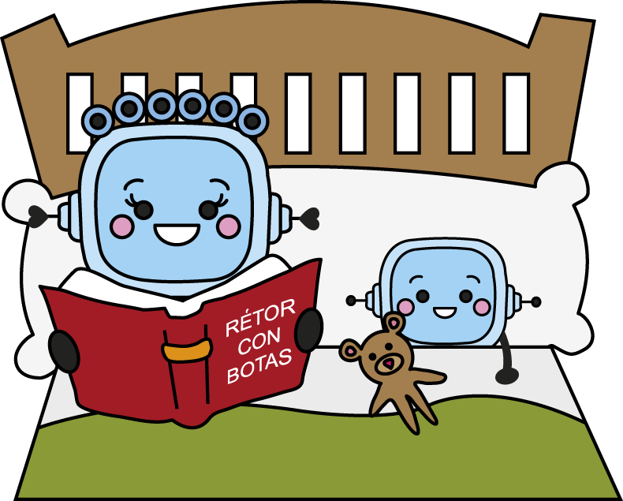

Ha llegado la hora del cuento. ¿En qué momento del día te gusta leer o que te lean cuentos?
De pequeño me gustaba que me contaran historias antes de dormir. Me leían y releían mis cuentos favoritos: Pulgarcito, Los siete cabritillos, La casita de chocolate…
¿Quieres que te enseñe el libro que estoy leyendo ahora?
Definición:
Leer de nuevo o volver a leer algo.
Ejemplo:
Releí el libro de aventuras que me regalaste porque me gustó mucho.

Definición:
Asiento con brazos y respaldo, semejante a un sillón pero generalmente menos voluminoso.
Ejemplo:
Cuando llego a casa me siento en mi butaca para leer un cuento hasta la hora de la cena.
Lectura facilitada
Empezamos con el cuento.
¿Te gustan los cuentos por la mañana?
¿Por la tarde?
¿Antes de dormirte?
De niño me encantaban los cuentos antes de dormir.
Me leían muchas veces mis cuentos favoritos:
Por ejemplo: Pulgarcito, Los siete cabritillos, La casita de chocolate, etc.
¿Te enseño mi cuento?
Sillón

Definición:
Silla de brazos, mayor y más cómoda que la ordinaria.
Ejemplo:
Por la noche veo la tele sentada en mi sillón.